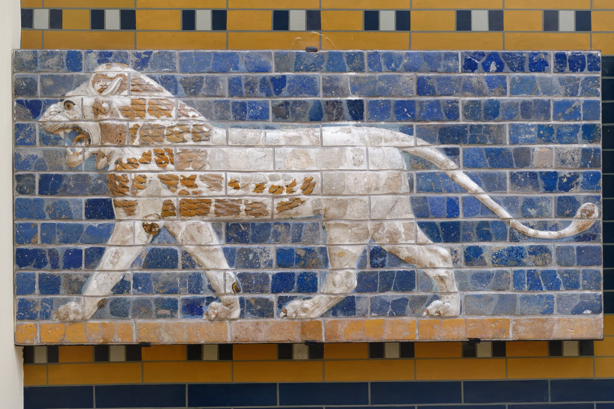

Babylon Processional Way Lion Reliefs

- Find Name
- Babylon Processional Way Lion Reliefs
- Description
- Glazed-brick panels of striding lions that lined the Processional Way leading through the Ishtar Gate at Babylon, built under Nebuchadnezzar II around 575 BC. About 120 lions marched along the walls of the sacred way, their mouths open, each panel made of moulded, polychrome-glazed bricks; some bricks are stamped with Nebuchadnezzar's name. Excavated by Robert Koldewey's German expedition between 1899 and 1917, the way was partly reconstructed in the Pergamon Museum, Berlin, while individual panels went to museums including the Royal Ontario Museum, the Metropolitan Museum of Art, and the Istanbul Archaeology Museums.
- Historical Period
- Neo-Babylonian Period (626-539 BC)
- Evidence Class
- Contextual
- Interpretations
- The lions are the art of the Babylon of Daniel's day: the lion was the symbol of Ishtar, goddess of love and war, and the panels lined the route of the annual New Year festival procession. They help readers picture the splendour of the city that carried Judah into exile, and they match the biblical picture of Babylon as a city of overwhelming display.
- Alternative Names
- Striding Lions of Babylon;Ishtar Gate Lion Panels
- Related Places
- Related Books
- Related Events
- Related People
- Scripture Illuminated
- Biblical Significance
- The lions lined the ceremonial heart of the 'great Babylon' Nebuchadnezzar boasted of in Daniel 4:30, giving visible form to the city's pride that the book says God humbled.
- Artifact Date
- c. 575 BC
- Current Location
- Pergamon Museum, Berlin (reconstruction); Royal Ontario Museum, Toronto; Metropolitan Museum of Art, New York; Istanbul Archaeology Museums (panels)
- Date Discovered
- 1899-1917
- Discovery Location
- Babylon, Iraq
- Timeline Era
- Exile
Awaiting Review Not yet checked against scholarly sources. Treat its claims as provisional until this entry is reviewed. About verification
Sources: https://en.wikipedia.org/wiki/Striding_Lion
https://en.wikipedia.org/wiki/Panel_with_striding_lion
https://en.wikipedia.org/wiki/Panel_with_striding_lion
Last reviewed: not yet reviewed